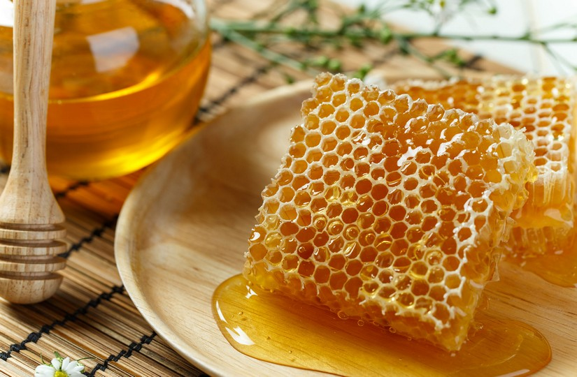

Мёд
Мёд является уникальным продуктом, сопровождающим существование человечества на протяжении долгого времени.
Любите ли
Чтож тогда давайте рассмотрим этот продукт более внимательно, выделим его плюсы и минусы.
Создание мёда
- Трудиться пчелы начинают весной, когда воздух прогревается свыше +14 градусов. Тогда пчела делает первый вылет, осматривая территорию.
- Осмотрев свои владения, и найдя место, где можно собирать нектар, она запоминает его и спешит в улей, чтобы собрать команду на медосбор. А потом, ведёт на рабочее поле тружениц. Такие вылеты она делает каждый день.
- Интересно, что не все пчелы летят на работу. Часть остаются в улье и выполняют другую работу. Одни делают соты, чтобы было, куда собирать мёд, а другие ждут, когда рабочие пчёлки принесут собранный на поле нектар.
- Получив нектар, пчелы-приемщицы разносят его по сотам и начинают перерабатывать его в то, что мы называем мёдом.
Свойства мёда
- Мёд - натуральный энергетик.
- Лекарство.
- Общеукрепляющее средство.
- Очень вкусный.
- Переедание меда может тяжело сказаться на почках и поджелудочной железе.
- Если нагреть мед до 42 градусов, это не только разрушит многие полезные вещества в его составе, но и приведёт к выделению веществ, вредных для организма человека.
Селфи создателя мёдика

Таблица калорийности и химического состава на 100 гр. мёда
| Продукт | Углеводы | Белки | Жиры | Калорийность |
|---|---|---|---|---|
| Мёд | 80.3 гр. | 0.8 гр. | 0 гр. | 328 ккал. |